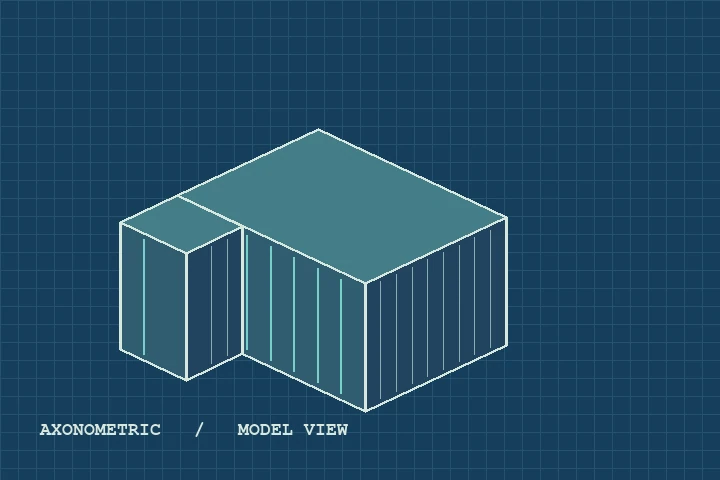
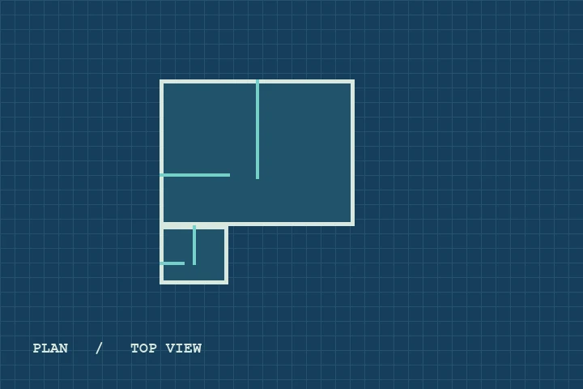

跳至内容
房子的两种看法 · 双联对照
版式总览
切换版式 ▾
GitHub
FOLD WORKS / 绘图室
房子的两种看法
当前模型
转角住宅
半围合庭院
退台住宅
A 轴测图
AXONOMETRIC

B 平面图
FLOOR PLAN

读图记录
短翼贴在主屋侧面。左图能看出两翼等高，右图则能看清入口为什么藏在转角处。
版式笔记 · 双联对照
阅读顺序
两张图共用对象、比例框和基线，从左边的体量读到右边的平面关系。
适用内容
方案对比、前后变化、设计图纸
使用边界
比较对象或图框一旦不同，读者容易把视角变化误认为方案变化。
图片为主 / 房子的两种看法
v2.1.0
Windows 95 版式图鉴
全部版式
单焦点海报
轨道设计季
长文单栏
一片叶子的三次观察
非对称影墙
从街面到河岸
杂志图文混排
油墨经过的地方
卡片目录
沿途邮局
双联对照
房子的两种看法
属性矩阵
窑房器形表
主从列表
夜班试听台
纵向时间线
一张邮票的行程
空间标注图
五颗星的位置
图片查看器
×
切换票态
 房子的两种看法 · 双联对照
房子的两种看法 · 双联对照